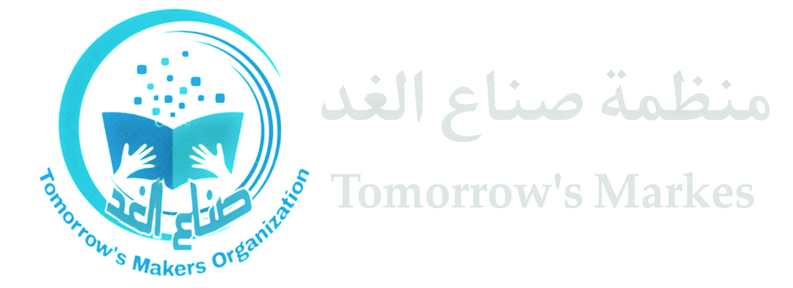

الصفحة الرئيسية
تواصل معنا
فيسبوك
تليجرام
البريد الالكتروني
للتواصل واتساب
قام اليوم رئيس منظمة "صناع الغد عبدالقوي الحريري بمعية فريق من المنظمة بزيارة الى عضو الهيئة الرئاسية في المجلس الانتقالي الاستاذ /فادي باعوم تم خلال اللقاء مناقشة سبل تعزيز التعاون بين المنظمة والتحالف المدني الذي ترعاه قيادة المجلس الانتقالي لتحقيق أهدافهما المشتركة في مكافحة الفساد وتعزيز النزاهة في المجتمع. تم التأكيد على أهمية توحيد الجهود وتبادل المعرفة والخبرات لتحقيق تأثير إيجابي ومستدام في مجال مكافحة الفساد. كما اكد من جانبه دعم المنظمة في تنفيذ مشاريعها وبرامجها المستقبلية، وتوفير الموارد اللازمة لضمان نجاحها. كما تم التأكيد على أهمية توعية المجتمع وتشجيع المشاركة المدنية في مكافحة الفساد، وتعزيز الثقافة الأخلاقية في جميع القطاعات. تعد هذه الخطوة خطوة هامة نحو تعزيز التعاون بين المنظمات غير الحكومية والشركاء الرسميين في مجال مكافحة الفساد. من اجل احداث تاثير اكبر في هذا الشان، #مكافحة_الفساد #تعزيز_الشفافية #صناع_الغد #منظمة_صناع_الغد
Design:773256403